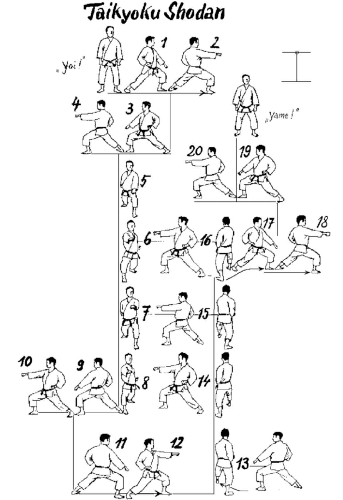

Taikyoku Shodan

- Yoi (divaricando la gamba destra) e vado in Hachiji Dachi (posizione naturale).
- Sposto la gamba sinistra verso sinistra, in posizione avanzata (Zenkutsu Dachi) ed eseguo parata bassa (Gedan Barai) con braccio sinistro.
- Avanzo un passo, pugno destro ad altezza spalla di fronte a me (Oi Tzuki Chudan).
- Sposto la gamba destra in direzione opposta girando di schiena (Mawatte), Gedan Barai destro.
- Avanzo con la gamba sinistra, Oi Tzuki sinistro.
- Sposto la gamba sinistra a 90° verso sinistra, Gedan Barai.
- Avanzo con la gamba destra ed eseguo Oi Tzuki destro.
- Avanzo con la gamba sinistra ed eseguo Oi Tzuki sinistro.
- Avanzo con gamba destra ed eseguo Oi Tzuki destro. Kiai.
- Sposto la gamba sinistra ruotando di schiena verso destra di ¾ di giro, Gedan Barai sinistro.
- Avanzo un passo, Oi Tzuki destro.
- Sposto la gamba avanti (di schiena) verso destra di 180°, Gedan Barai destro.
- Avanzo un passo, Oi Tzuki sinistro.
- Sposto la gamba avanti verso sinistra di 90°, Gedan Barai sinistro.
- Tre Oi Tzuki avanzando. Kiai.
- Sposto la gamba sinistra ruotando di schiena verso destra di ¾ di giro, Gedan Barai sinistro.
- Avanzo un passo, Oi Tzuki destro.
- Sposto la gamba destra in direzione opposta (Mawatte), Gedan Barai destro.
- Avanzo con la gamba sinistra, Oi Tzuki sinistro.
- Yame! Richiamando la gamba sinistra e torno in posizione di Yoi!